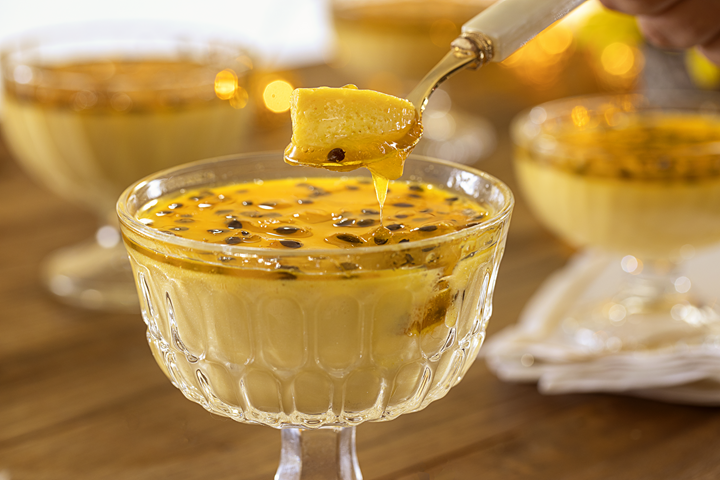

Mousse De Maracujá
O que eu acho da receita:
Simples, fácil e rápida pra qualquer ocasião . . . até pra apresentação de Projeto individual

Ingredientes
Para a base do mousse:
1 lata (395 g) de leite condensado
1 lata (200 g) de creme de leite sem soro
1 lata (aprox. 200 ml) de suco concentrado de maracujá (ou polpa fresca)
• Se usar polpa fresca, coe as sementes e mantenha cerca de 200 ml de líquido total (use peneira fina).
Para dar consistência (gelatina)
1 envelope (12 g) de gelatina incolor sem sabor
5 colheres (sopa) de água filtrada para hidratar a gelatina
2 colheres (sopa) de água quente (para dissolver a gelatina hidratada)
Para decorar (opcional, mas recomendado)
3 colheres (sopa) de polpa de maracujá (com as sementes)
Folhinhas de hortelã (ou raspas de casca de maracujá cristalizada)
Modo de preparo:
Hidrate a gelatina:
Misture 6 g de gelatina com 2 colheres de água fria e espere 3 minutos.
Depois, adicione 1 colher de água quente para dissolver completamente. Reserve.
Misture a base:
No liquidificador, bata o leite condensado, o creme de leite e o suco de maracujá por 1 minuto.
Adicione a gelatina dissolvida e bata por mais 30 segundos.
Distribua em taças e leve à geladeira por pelo menos 4 horas.
Decore com a polpa de maracujá e hortelã antes de servir.